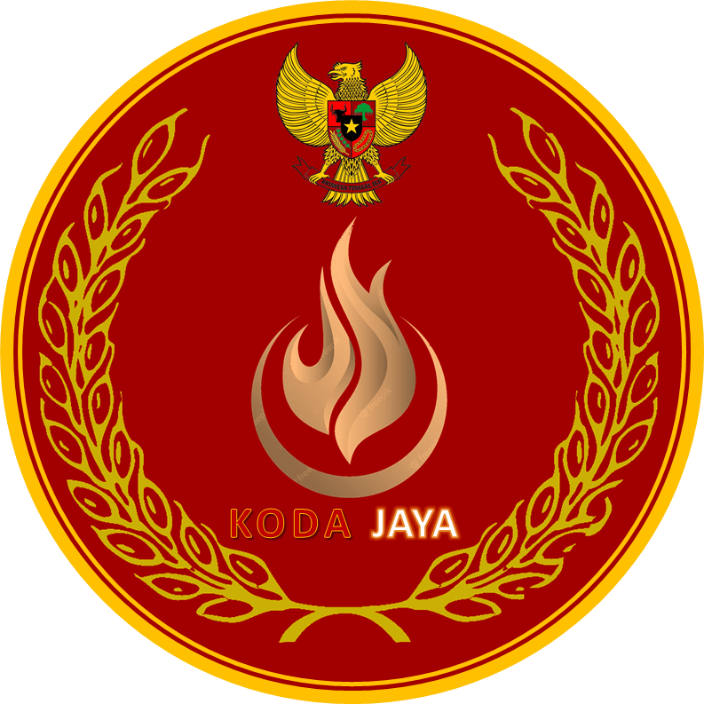
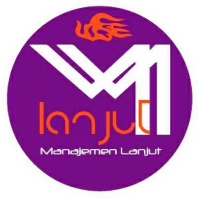

My Information
- Name: Rifky Andhika Maulana
- Nationality: Indonesia
- Age:
- Position: Web Developer
Description
Hi, I'm Rifky
a 2022 graduate in Information Technology. My career journey began as a teaching assistant in the Advanced Management Lab and the Computerization Development Center at Gunadarma University, where I honed a deep understanding of technology.
Afterward, I completed a one-year internship at CV Forkindo Utama as a Web Developer, contributing to various web development projects. Currently, I am continuing my role as a Web Developer at Bisnis Indonesia Group, with a total of three years of experience that has strengthened my skills and insights in this field.
I am highly motivated to keep developing and embrace new challenges to further expand my knowledge and share it with those who need it. For me, the learning journey never ends, and each challenge is an opportunity to grow and improve.
Work Experience
-
PT Jurnalindo Aksara Grafika (Bisnis Indonesia)
IT Programmer (November 2022 - Now)
- Responsible for developing the JAGO 2.0 website, Karier Bisnis Indonesia website, ESS Bisnis Indonesia website, HRIS Bisnis Indonesia website, Hypeabis.id website, and AGP Bisnis Indonesia website.
- Working together with System Analyst, UI/UX and QA to develop a website application to make it a better application.
-

Lembaga Pengembangan Komputerisasi Universitas Gunadarma
Laboratory Assistant (September 2021 - Maret 2023)
- Assessing students who have done lab assignments
- Teach students to practice computer programming
-

PT Koda Jaya
Web Developer (July 2022 - November 2022)
- Create a full PT Koda Jaya website
- Perform regular website maintenance
-
CV Forkindo Utama
Web Developer (Agustus 2021 - Agustus 2022)
- Maintaining the database server PT. Wasa Mitra Engineering is active regularly.
- Making a website for PT. Wasa Mitra Engineering
- Conducting website user testing
-

Lab Manajemen Lanjut Universitas Gunadarma
Laboratory Assistant (February 2020 - Agustus 2021)
- Assessing students who have done lab assignments
- Teach students to practice computer programming